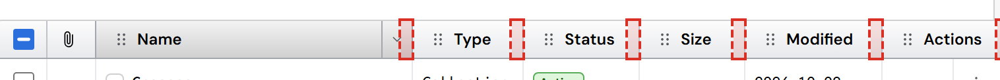
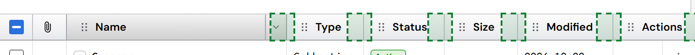
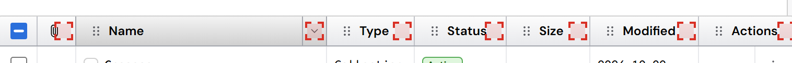
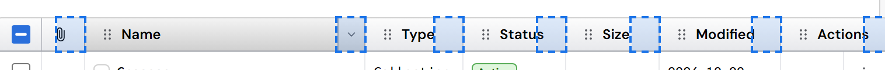
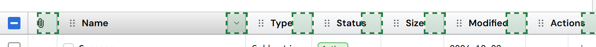
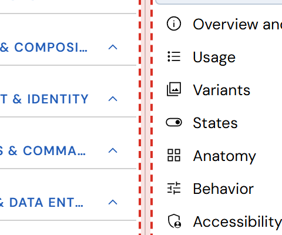
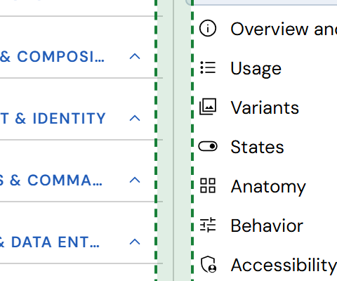
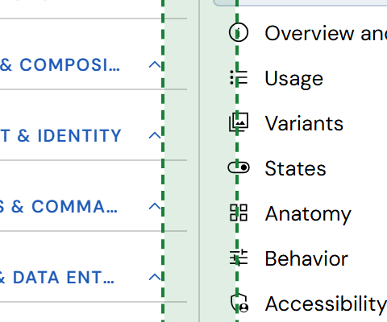

Small targets: what #217 is about (column resize, header menu, nav pane splitter)
The DataGrid's look and behavior are settled (0.69). This is a separate check: the accessibility rule that every pointer target is at least 24×24px (WCAG 2.2, 2.5.8), or 44×44px on touch, unless another control of that size does the same thing. Three small targets fail it. They fail because the old grid engine marked them as "has an equivalent", and that marker was lost when the engine was removed (87d58e1b).
- Column resize handle: 8×28px, on each column's end edge.
- Header menu chevron: 14×14px, inside the options button (about 23×28px) that shows on hover.
- Nav pane splitter: 8px wide, the full height of the pane.
Red dashes = the hit area today. Green = a 24px (or 44px) hit area. The outlines are drawn on the pictures only; nothing on screen changes in any option except that a bigger area reacts to the pointer.
1 · Column resize handles


2 · Header menu chevron



3 · Nav pane splitter



The options
- A · A bigger invisible hit area. The line and icons look the same; a 24px area (44px on touch) reacts to the pointer. Good for the splitter. For resize handles it collides with the options button and the start of the next title, so near the edge a click could resize instead of sort.
- B · Mark them "has an equivalent" again. No change on screen or in behavior. Allowed by the rule when another full-size control does the same: the column menu's width and "Size to fit" items (resize), the whole options button and right-click (the chevron), and the nav pane's own toggle and arrow keys (the splitter). This is what the old engine did.
- C · Leave them. Nothing changes; the targets test keeps failing on every run and every PR.
Recommendation: B for the resize handles and the chevron (the menu already gives a full-size way to do both; Windows Explorer, Excel and Google Sheets keep thin resize edges too); A for the nav pane splitter (24px with a mouse, 44px on touch, as VS Code, Fluent and Material give their drag handles a larger invisible area). Sources: WCAG 2.2 · 2.5.8 Target Size (Minimum) and its "Equivalent" exception; Material 3 · touch targets 48dp; Apple HIG · 44pt hit targets.